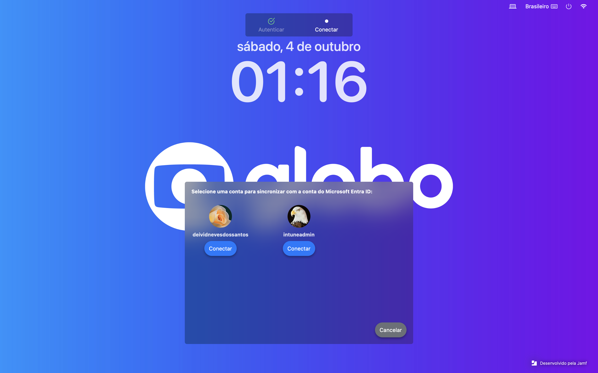

Tire suas dúvidas sobre o novo ambiente Apple, Jamf Connect, bloqueios, privilégios de admin e políticas de
segurança.
Se não encontrar o que procura, acione o suporte.
Como faço login após a migração?
O login será feito via Jamf Connect, com as mesmas credenciais usadas nos serviços da Globo/Microsoft. Se sua
senha precisa ser ajustada (por ser longa ou conter caracteres especiais), altere antes do próximo login.
Não sou mais admin no meu Mac, como faço para instalar apps?
A administração será concedida temporariamente via Jamf Connect, sempre que você precisar instalar aplicativos
ou mudar configurações avançadas. Basta pedir elevação no menu do Jamf Connect!
O que acontece se tentar conectar um pendrive ou HD externo?
Dispositivos externos USB não autorizados serão bloqueados automaticamente, protegendo seu Mac e os dados da
Globo. Se precisar de acesso especial, solicite à TI.
Meu papel de parede mudou, posso trocar?
O papel de parede padrão será definido pela Globo para reforçar a identidade da empresa. Mudanças
personalizadas estão bloqueadas por política.
Perdi o acesso ao Mac ou não lembro a senha. O que faço?
Sua senha será a mesma do Microsoft/Globo. Caso esqueça, altere pelo portal de senhas Microsoft
(Office/Outlook)
e reinicie o Mac, ou procure o suporte.

Outros bloqueios afetarão meu dia a dia?
As proteções implementadas não impactarão seu fluxo de tarefas comum. São medidas de segurança para proteger a
informação da empresa. Dúvidas? Consulte o FAQ ou suporte.
Preciso migrar arquivos ou fazer backup manual?
Antes da migração, é recomendado salvar arquivos importantes no OneDrive ou na nuvem da Globo. O time de TI pode
orientar backups específicos conforme o seu perfil.